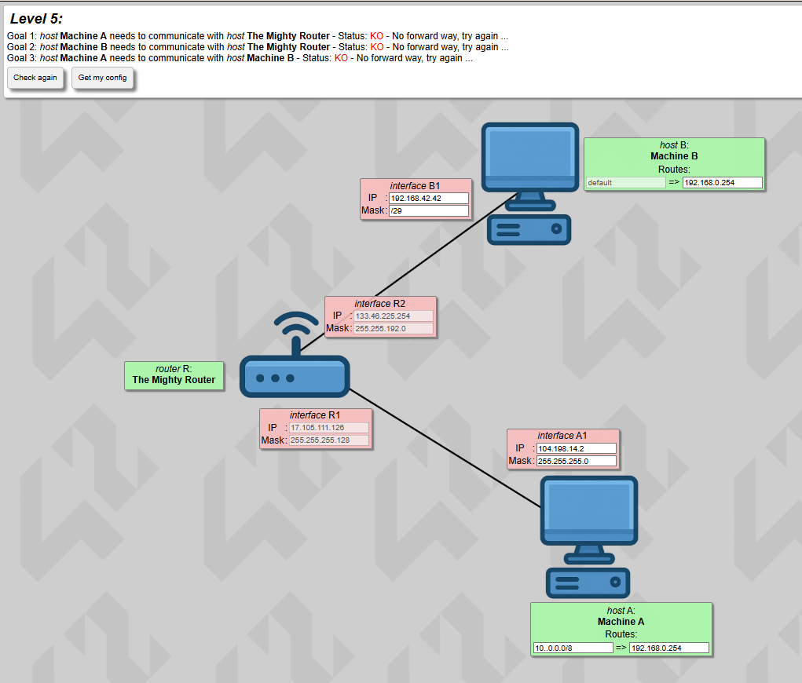
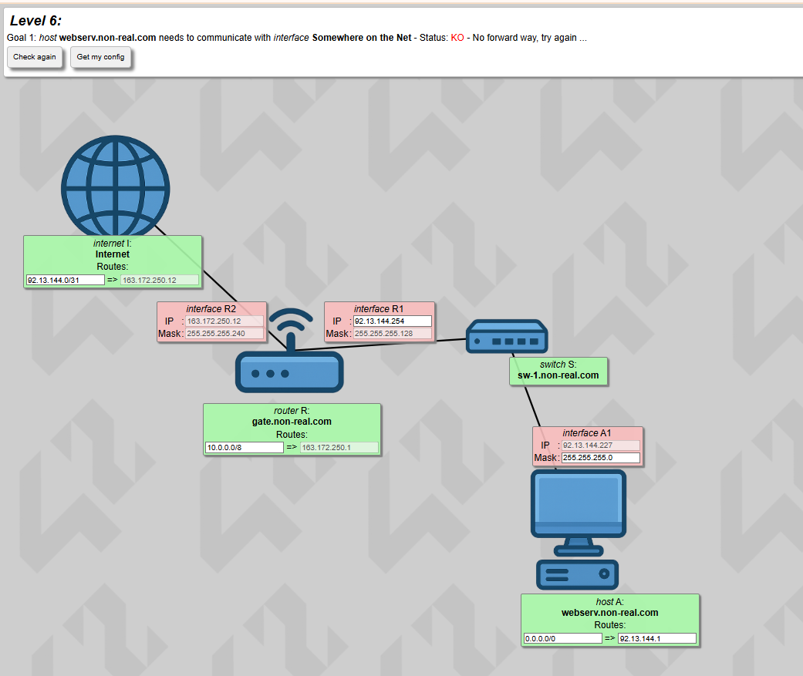
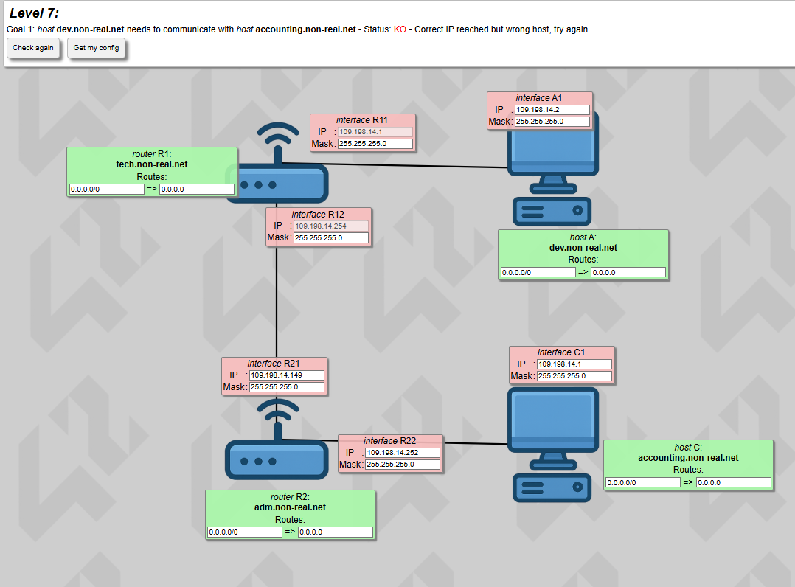
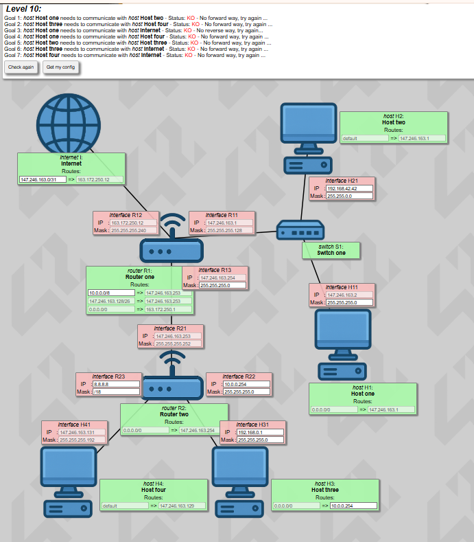

📖How to read this book
The numbers in NetPractice change on every attempt, but the rules never change. So don't memorize answers. Understand the rule, and you'll solve any version of the level.
Every lesson contains:
- Theory: the concepts the level tests you on.
- Solution: on the exact numbers you got.
- Every variation: the different shapes the level can take.
- Algorithm: fixed steps you apply to any numbers.
- Observatory: calculators to check your solution.
Two computers, one cable
The simplest possible network: two computers connected directly by a wire. They need to talk. Here you'll learn everything the rest of the project is built on: the IP address, the mask, and the condition for two hosts to be on the same network.

🛰️1. Understanding the mission
The screen shows two separate networks, each with two computers connected directly:
Screen vocabulary
| Term | Meaning |
|---|---|
| Host | Any device where communication ends: a computer, a phone, a server. |
| Interface | The device's network port, the "door" the wire goes into. Every interface has an IP address and a mask. |
| Goal | What must be achieved, like "A communicates with B". |
| Status: KO | The goal isn't met yet. It turns OK when solved. |
| Check again | Tests your current settings. |
| Get my config | Saves your settings to a file (you need it to submit the project). |
In your screenshot: A1 and D1 are white (you edit them), while B1, C1 and all masks are grey (fixed).
🌟2. The IP address: a star's address in the galaxy
An IPv4 address is a number that identifies each interface on a network, like a house address. It is written as 4 parts separated by dots:
104 . 95 . 23 . 12
- Each part is called an octet, because it is made of 8 bits.
- Total: 4 × 8 = 32 bits.
- Each part ranges from 0 to 255 only. It can never exceed 255.
11111111 = 128+64+32+16+8+4+2+1 = 255. No 8-bit number is larger.So
104.93.23.349 and 211.190.271.42 in your screenshot are impossible addresses. That is the first trap of the level.An address has two parts
Every IP splits into:
- The network part: the "neighborhood" name. It must be identical for every host on the same network.
- The host part: the "house number" in the neighborhood. It must be different for each host.
Who decides where the network part ends and the host part begins? The mask.
🔢3. Binary
A computer doesn't see 104; it sees 8 lamps, each off (0) or on (1). Each position has a weight:
Decimal → binary (the subtraction method)
Example: 104. Walk the weights from the largest: does the weight fit into what's left? If yes, write 1 and subtract it. If no, write 0.
| Weight | 128 | 64 | 32 | 16 | 8 | 4 | 2 | 1 |
|---|---|---|---|---|---|---|---|---|
| Remaining before | 104 | 104 | 40 | 8 | 8 | 0 | 0 | 0 |
| Bit | 0 | 1 | 1 | 0 | 1 | 0 | 0 | 0 |
Result: 104 = 01101000. Check: 64+32+8 = 104 ✓
B1's full address in binary
Blue is the network part (first 24 bits) and orange is the host part (last 8 bits). You'll see why in the next section.
255.255.255.192, and binary is what solves them. So learn it now.🎭4. The subnet mask
The mask is also a 32-bit number, and it always looks like a run of 1s followed by a run of 0s.
- Each 1 in the mask: the matching IP bit belongs to the network part.
- Each 0 in the mask: the matching IP bit belongs to the host part.
CIDR notation (the slash)
Instead of writing the whole mask, we write the number of 1s after a slash: 255.255.255.0 = /24 because it has 24 bits set to 1.
The "full" masks of Level 1
| Mask | CIDR | Network part | Host part | Possible hosts |
|---|---|---|---|---|
255.0.0.0 | /8 | first part | last 3 parts | 2²⁴ − 2 = 16,777,214 |
255.255.0.0 | /16 | first 2 parts | last 2 parts | 2¹⁶ − 2 = 65,534 |
255.255.255.0 | /24 | first 3 parts | last part | 2⁸ − 2 = 254 |
255, the matching part of the two addresses must be identical.Wherever it has
0, you're free to choose, as long as you avoid two reserved cases (next section).A preview: every possible value of a mask octet
Because the 1s must be contiguous, a mask octet can only take 9 values:
| 0 | 128 | 192 | 224 | 240 | 248 | 252 | 254 | 255 |
|---|---|---|---|---|---|---|---|---|
| 00000000 | 10000000 | 11000000 | 11100000 | 11110000 | 11111000 | 11111100 | 11111110 | 11111111 |
Any other value (like 255.255.250.0) is an invalid mask. You'll need this table a lot from Level 2 on.
🌌5. Network address and broadcast address
Every network has two reserved addresses that are never given to a host:
| Address | How it's built | Example (104.95.23.12/24) |
|---|---|---|
| Network address | All host bits = 0 | 104.95.23.0 |
| Broadcast address | All host bits = 1 | 104.95.23.255 |
| Valid host addresses | Everything in between | 104.95.23.1 → 104.95.23.254 |
The AND operation: how a device computes the network address
The device compares each IP bit with the matching mask bit: 1 AND 1 = 1, and anything else = 0. Put simply, the mask "keeps" the network part and "erases" the host part.
| IP | 211.191.159.75 |
| AND Mask | 255.255.0.0 |
| = Network | 211.191.0.0 |
| Broadcast | 211.191.255.255 |
255 and put 0 in the rest to get the network address; put 255 in the rest to get the broadcast address.🔗6. The direct-link rule
Two hosts connected directly by a wire (no router) can communicate only if all of these hold:
- Valid addresses: every part between 0 and 255.
- Same mask on both sides.
- Same network address: the network part is identical.
- Different addresses: the two addresses must not be equal.
- Neither network nor broadcast: the host part is not all 0s and not all 1s.
🚀7. Step-by-step solution (your numbers)
Goal 1: A ↔ B
- What's fixed?
B1 = 104.95.23.12with mask255.255.255.0(/24), both grey. - What is B's network? /24 means the first 3 parts are the network: network
104.95.23.0, broadcast104.95.23.255. - What's wrong with A1?
104.93.23.349has two errors: the second part 93 isn't 95 (different network), and the last part 349 > 255 (invalid). - Solution: copy
104.95.23and pick a last part from 1 to 254, as long as it isn't 12.
Goal 2: C ↔ D
- What's fixed?
C1 = 211.191.159.75with mask255.255.0.0(/16). - What is C's network? /16 means only the first 2 parts are the network: network
211.191.0.0, broadcast211.191.255.255. - What's wrong with D1?
211.190.271.42: 190 isn't 191, and 271 > 255. - Solution: start with
211.191; the last two parts are free (0 to 255 each), avoiding0.0,255.255and159.75.
🌠8. Every variation you might get
Level 1 is randomly generated, but it always comes from these families:
| # | Shape | What to do | Example |
|---|---|---|---|
| 1 | One side's IP is fixed, the other side's IP is editable, the mask is fixed | Copy the network part from the fixed side and change the host part | fixed 10.4.7.20/24 → 10.4.7.21 |
| 2 | The editable field is on the other side (B instead of A) | Same method: the rule is always "grey is the reference" | — |
| 3 | Mask /8 | Only the first part must match; the rest is free | 45.200.3.9/8 → 45.1.1.1 |
| 4 | Mask /16 | The first two parts must match | Goal 2's case |
| 5 | Mask /24 | The first three parts must match | Goal 1's case |
| 6 | The initial value has a number > 255 | A trap: correct it to a valid number | .349, .271 |
| 7 | The initial value is from a different network | Fix the network part to match the fixed side | 93 → 95 |
| 8 | The initial value equals the other side's address | Change the host part | address conflict |
| 9 | The initial value is the network address (host all 0) | Pick a number between the bounds | x.x.x.0 with /24 |
| 10 | The initial value is the broadcast address (host all 255) | Pick a number between the bounds | x.x.x.255 with /24 |
| 11 | The mask itself is editable | Make it match the other side's mask | appears in later levels |
| 12 | Both fields (both IPs) are editable | You're free: pick any valid network and give the two sides different addresses in it | 192.168.1.1 and 192.168.1.2 /24 |
- With /16, the third part can be
0or255, and that's fine. For example211.191.0.5and211.191.255.1are valid. What's forbidden is the whole host part being zero (0.0) or all 255 (255.255). - With /8,
45.0.0.1is valid, while45.0.0.0is the network address. - Avoid addresses starting with
127(reserved for the device itself, loopback),0, or 224 and above. In Level 1 the grey usually forces the start for you, so you won't hit this.
🧭9. The general algorithm: solve any numbers
- Identify the grey fields. They are the reference.
- Read the mask and convert it to CIDR: number of
255s × 8. - Compute the fixed side's network address: copy the parts under 255 and zero the rest.
- Compute the broadcast address: same, but put 255 in the free parts.
- In the white field: copy the network part as is.
- Pick a host part so the address is greater than the network address, smaller than the broadcast address, and different from the other side.
- Make sure every part is between 0 and 255, and that the two masks match.
- Press Check again.
🔭10. Calculation observatory
Enter any numbers the game gives you, and check before pressing Check.
🪐 Address analyzer
🔗 Two-interface link checker
☄️11. Common mistakes
| Mistake | Why it's wrong |
|---|---|
| Editing the white field without looking at the grey | The grey doesn't change; it defines the network. |
| Keeping a number like 349 or 271 | Any part > 255 is impossible. |
| Copying the other side's address exactly | Two identical addresses = conflict. |
Ending the address in .0 or .255 with /24 | Those are the network and broadcast addresses. |
| Thinking /16 requires 3 matching parts | /16 = only 2 parts. The 3rd and 4th are free. |
| Forgetting Get my config | You need the files for submission. |
🏋️12. Exercises (with different numbers)
Exercise 1: B1 fixed = 192.168.10.5 /24, A1 editable
192.168.10.0. Any address 192.168.10.X with X from 1 to 254 and X ≠ 5. Example: 192.168.10.6.Exercise 2: D1 fixed = 74.12.0.1 mask 255.255.0.0, C1 starts as 74.21.300.8
21 instead of 12, and 300 > 255. Solution: 74.12.Y.Z, like 74.12.0.2 or 74.12.50.50. Forbidden: 74.12.0.0, 74.12.255.255 and 74.12.0.1.Exercise 3: is 88.4.2.255 /24 a valid host address?
88.4.2.0.Exercise 4: B1 fixed = 45.200.3.9 mask 255.0.0.0
45. Valid examples: 45.1.1.1, 45.200.3.10, 45.0.0.1. Forbidden: 45.0.0.0 and 45.255.255.255.Exercise 5: which of these is a valid host in 150.20.7.0/24? 150.20.7.0 · 150.20.7.256 · 150.20.8.4 · 150.20.7.99
150.20.7.99. The first is the network address, the second has 256, the third is in network 150.20.8.0.Exercise 6: 211.191.0.0 with /16, is it valid for D1? What about 211.191.0.255?
0.0 = network address). The second, yes: host part 0.255 is neither all 0s nor all 1s.Splitting the neighborhood into streets
The same simple network (two computers and a cable), but the masks are no longer full: /27 and /30. You'll learn to split the last octet into "blocks", spot a fake mask, and recognize addresses that never work.

/30.🧳What's new here? (and what we bring from planet one)
We assume you finished Level 1. These concepts won't be explained again:
| Concept | Where it's explained |
|---|---|
| White and grey fields | Level 1 · §1 |
| Binary and bit weights | Level 1 · §3 |
| Mask, CIDR and the nine-value table | Level 1 · §4 |
| Network, broadcast and AND | Level 1 · §5 |
| The five direct-link conditions | Level 1 · §6 |
| Calculation observatory (works with any mask) | Level 1 · §10 |
New on this planet:
- Masks with a part that is neither 255 nor 0, like
224and252. - Block size: a fast way to find network and broadcast without binary.
- The mask itself may be wrong and editable.
- A mask may be written as
/30instead of255.255.255.252. - Reserved addresses that never work whatever the mask, like
127.x.x.x.
🌗1. Partial masks
In Level 1 the boundary between network and host fell between parts (after 8, 16 or 24 bits). Now the boundary falls inside one part: some bits of the last octet belong to the network and some to the host.
Example: /27 = 255.255.255.224
The first 3 bits of the last octet (110) belong to the network and the last 5 (11110) to the host. So the host part = 5 bits, the number of addresses = 2⁵ = 32, of which 30 are valid hosts.
Table of last-octet masks
| CIDR | Mask | Host bits | Block size | Valid hosts | Blocks in 256 |
|---|---|---|---|---|---|
/24 | 255.255.255.0 | 8 | 256 | 254 | 1 |
/25 | 255.255.255.128 | 7 | 128 | 126 | 2 |
/26 | 255.255.255.192 | 6 | 64 | 62 | 4 |
/27 | 255.255.255.224 | 5 | 32 | 30 | 8 |
/28 | 255.255.255.240 | 4 | 16 | 14 | 16 |
/29 | 255.255.255.248 | 3 | 8 | 6 | 32 |
/30 | 255.255.255.252 | 2 | 4 | 2 | 64 |
/30 is the smallest mask that fits exactly two hosts, so you'll see it a lot on links between two hosts or two routers./20 = 255.255.240.0: the third octet has blocks of 16, and the fourth octet is fully free (0–255). You'll find an example in the exercises.✨2. Block size: the magic number
The fastest way to solve any partial mask, without converting to binary:
- Take the mask part that is neither 255 nor 0 (e.g.
224). Call it the "interesting octet". - Block size = 256 − its value. Example: 256 − 224 = 32.
- Blocks start at multiples of the block size:
0, 32, 64, 96, 128, 160, 192, 224. - Take the matching IP part (e.g.
222) and find the largest multiple not above it: 192. That's the block start = network address. - Broadcast = start + block size − 1 = 192 + 32 − 1 = 223.
- Valid addresses: from start + 1 to broadcast − 1, i.e.
193→222.
222 ÷ 32 = 6.93, take the integer part 6, and 6 × 32 = 192.
Double-check in binary (AND from Level 1 · §5)
| 222 | 1101 1110 |
| AND 224 | 1110 0000 |
| = 192 | 1100 0000 |
📏3. The block ruler
This tool splits 0–255 into blocks according to the mask and lights up the block your number falls in.
🎭4. The invalid mask
In your screenshot, B1's mask is 255.255.255.32. 32 in binary:
A mask must be 1s contiguous from the left. Here there's a lone 1 in the middle of 0s, so it is not a mask. And 32 isn't one of the nine allowed values (the table in Level 1 · §4).
/27 mask, not the mask itself. The game mixes them up on purpose. The correct mask is 256 − 32 = 224.Two ways to write a mask
The game accepts both formats in any mask field: 255.255.255.252 or /30. They are exactly the same thing.
🚫5. Reserved addresses
Some ranges never work for a host in NetPractice, even if all the math is right:
| Range | Name | Why it's forbidden |
|---|---|---|
127.0.0.0/8 | Loopback | Any address starting with 127 means "this device itself". The message never leaves the device, so it never reaches the other side. |
0.0.0.0/8 | "This network" | Reserved, never given to a host. |
224.0.0.0 → 239.255.255.255 | Multicast | For group delivery, not a single host. |
240.0.0.0 and above | Reserved for future use | Not used. |
10.0.0.0/8, 172.16.0.0/12 and 192.168.0.0/16. You'll come back to them in the levels with an "internet", because they don't work there.🚀6. Step-by-step solution (your numbers)
Goal 1: B ↔ A
| Field | Value | State |
|---|---|---|
| A1 IP | 192.168.43.1 | ⚪ editable |
| A1 Mask | 255.255.255.224 | 🔒 fixed |
| B1 IP | 192.168.43.222 | 🔒 fixed |
| B1 Mask | 255.255.255.32 | ⚪ editable |
- The mask: A1's fixed mask is
/27, and B1's mask is invalid (§4). Set B1's mask =255.255.255.224. - B1's block: block size 32, and 222 is in the block starting at 192. So network
192.168.43.192and broadcast192.168.43.223. - A1's problem:
.1is in block 0–31, i.e. network192.168.43.0, a different network from B1's even though the first 3 parts match! - Solution: A1 between
.193and.221(since.222is taken).
Goal 2: D ↔ C
| Field | Value | State |
|---|---|---|
| C1 IP | 127.0.0.1 | ⚪ editable |
| C1 Mask | 255.255.255.252 | 🔒 fixed |
| D1 IP | 127.0.0.4 | ⚪ editable |
| D1 Mask | /30 | 🔒 fixed (same as 255.255.255.252) |
- The masks match:
/30, block size 4, each block holds only two hosts. - First problem: both addresses start with
127, the reserved loopback range (§5). The start must change. - Second problem: even ignoring 127,
.1is in block 0–3 and.4is the network address of block 4–7. - Solution: both IPs are white, so you're free. Pick any /30 block in a normal range and give the two sides the two middle numbers.
.1/.2, .5/.6, .9/.10, .13/.14… i.e. 4k+1 and 4k+2. .2/.3 is wrong (.3 is broadcast), and .3/.4 is wrong (two different blocks).🌠7. Every variation of Level 2
| # | Shape | What to do |
|---|---|---|
| 1 | A white invalid mask (like .32 or .250) | Copy the other side's fixed mask |
| 2 | A white valid mask that differs from the other side | Copy the fixed mask |
| 3 | Both masks white | Pick a mask that puts both addresses in one block, or change the addresses too |
| 4 | First 3 parts match but the last part is in another block | Compute the fixed side's block and put the other inside it |
| 5 | A white address = block start (network) or end (broadcast) | Move it inside the block |
| 6 | An address starting with 127, 0 or ≥ 224 | Change the whole range, e.g. 192.168.x.x or 10.x.x.x |
| 7 | Mask written /n on one side and dotted on the other | Convert and compare: they may already match |
| 8 | Both sides white with /30 | Pair 4k+1 and 4k+2 |
| 9 | Partial mask in the third octet (/17–/23) | Apply block size to the third octet; the fourth is free (0–255) |
| 10 | Partial mask in the second octet (/9–/15) | Same method on the second octet; the last two are free |
🧭8. The updated algorithm
This extends the Level 1 algorithm · §9 to work with any mask:
- Fix the mask first: if it's white and invalid or different, copy the fixed mask.
- Check the range: if any white address starts with 127, 0 or ≥ 224, change its start.
- Find the interesting octet in the mask (neither 255 nor 0). If there is none, the mask is full: go back to the Level 1 method.
- Compute the block size = 256 − the interesting octet.
- Compute the block start for the fixed side = ⌊its number ÷ block⌋ × block. Octets after the interesting one = 0.
- Broadcast = start + block − 1. Octets after the interesting one = 255.
- Put the white address between start and broadcast, different from the other side.
- Verify in the calculation observatory, then Check again.
.222 gives A1 = .221. Just make sure you don't land on the block start.☄️9. Common mistakes
| Mistake | Why it's wrong |
|---|---|
| "The first 3 parts match, so they're on the same network" | Only true with /24. With /27, .1 and .222 are on different networks. |
Writing the block size as the mask (.32) | Mask = 256 − block = .224. |
Keeping 127.x.x.x because the math checks out | Loopback never leaves the device. |
Using .0 and .1 in /30 | .0 is the network address. The right pair is .1 and .2. |
Forgetting that /30 = 255.255.255.252 | The two formats are equivalent. |
🏋️10. Exercises
Exercise 1: B1 fixed = 10.1.1.100 mask /26. What range is allowed for A1?
10.1.1.64, broadcast 10.1.1.127. A1 from .65 to .126 except .100.Exercise 2: white mask 255.255.255.16, the other side fixed at 255.255.255.240
/28. The correct mask is 255.255.255.240.Exercise 3: 172.16.5.47 with /29, valid for a host?
Exercise 4: both sides white, mask /30. Are 192.168.0.6 and 192.168.0.7 correct?
.7 is the broadcast. The right pair is .5 and .6.Exercise 5: B1 fixed = 10.20.37.5 mask 255.255.240.0
10.20.32.0, broadcast 10.20.47.255. A1 any address between 10.20.32.1 and 10.20.47.254, e.g. 10.20.40.40.Exercise 6: C1 = 127.0.0.1 and D1 = 127.0.0.2 with /30. The math is right, so why KO?
127.x.x.x is the loopback range. Change them to e.g. 10.0.0.1 and 10.0.0.2.The space station: three computers and a switch
The link is no longer a wire between two computers. Now three computers are connected to one switch, and three goals must succeed together. You'll learn to combine scattered fixed constraints into one solution.

🧳What's new here? (and what we bring from earlier planets)
| Used without re-explaining | Where it's explained |
|---|---|
| A number above 255 is invalid | Level 1 · §2 |
| The five direct-link conditions | Level 1 · §6 |
| Block size, network and broadcast | Level 2 · §2 |
The /24–/30 table and host counts | Level 2 · §1 |
127.x.x.x is reserved (loopback) | Level 2 · §5 |
New on this planet:
- The switch: what it is, what it does, and what it does not do.
- All hosts on one switch = one network with one mask.
- Combining constraints: a fixed value on one host applies to all hosts.
- Choosing a mask that fits the number of hosts and two fixed addresses at once.
- A glimpse of the MAC address and network layers.
🛰️1. The switch: a distribution hub
and Host_C is connected to the same switch too
A switch gathers several wires at one point. When a host sends a message, the switch delivers it to the port behind which the destination sits.
| A switch… | |
|---|---|
| ✅ connects hosts of the same network | Like a wire branching to several ends. |
| ❌ has no IP and no mask in NetPractice | That's why it has no fields. |
| ❌ does not connect two different networks | That's a router's job, the topic of the next planet. |
3C:52:82:1A:9F:04. A switch works with MAC addresses, not IP addresses. That's why it's said to work at layer 2 (Data Link), while IP is at layer 3 (Network). You'll never type a MAC in the project, but it explains why a switch has no IP.🌐2. One network = one mask
Since the switch changes nothing, every host on it must meet the conditions of Level 1 · §6 with every other host:
- The same mask for everyone.
- The same network address for everyone, i.e. inside the same block.
- All addresses different from each other, and none is a network or broadcast address.
🧩3. Combining constraints from all goals
In Levels 1 and 2 everything you needed was on the other side. Now the fixed facts are scattered, and you have to gather them:
- List every grey field on the whole screen.
- Any fixed mask becomes everyone's mask.
- Any fixed IP sets the block everyone must be in, once you know the mask.
- Then fill all the white fields to match these constraints.
📐4. A mask that fits everyone
If the mask is yours to choose (no fixed mask anywhere), the choice has two conditions:
Condition 1: capacity
The number of valid hosts in the block must be ≥ the number of hosts on the switch. See the "valid hosts" column in the Level 2 · §1 table:
- Two hosts:
/30is enough. - 3 to 6 hosts:
/29or bigger. - 7 to 14 hosts:
/28or bigger.
Condition 2: two fixed addresses in one block
If two addresses are fixed, the mask must put them in the same block. The method: write the differing part in binary and count the common bits from the left.
| 10.0.0.10 | 00001010 |
| 10.0.0.14 | 00001110 |
| common bits | 24 + 5 = 29 → /29 max |
The bits match up to the fifth bit of the last octet, so the smallest network holding both is /29 (block 8–15). Any mask with a smaller number, like /28 or /24, also holds them. /30 separates them.
🔭5. Switch observatory
🔀 Switch network checker (any number of hosts)
One line per interface: IP, a space, then the mask (dotted or /n).
📐 Smallest network holding two fixed addresses
🚀6. Step-by-step solution (your numbers)
Step 1: inventory of fields
| Interface | IP | Mask |
|---|---|---|
| A1 | 🔒 104.198.30.125 | ⚪ 255.255.255.0 |
| B1 | ⚪ 127.168.42.42 | ⚪ 255.255.0.0 |
| C1 | ⚪ 104.198.30.295 | 🔒 255.255.255.128 |
- Fixed constraints: one fixed IP (
A1 = 104.198.30.125) and one fixed mask (C1 = /25). - Everyone's mask: C1's mask is fixed, so A1's and B1's masks =
255.255.255.128. - The block: block size = 256 − 128 = 128, and 125 is in block 0–127. Network
104.198.30.0, broadcast104.198.30.127. - Capacity: /25 holds 126 hosts and we need 3. Enough.
- B1: its address starts with
127(loopback) and is on another network. Put it inside the block, e.g.104.198.30.1. - C1:
295 > 255. Put it inside the block, e.g.104.198.30.2.
104.198.30.1 to 104.198.30.126, except .125 (A1's address)./24 looks right, because .125 and .1 are in the same /24. But C1 is pinned at /25, and masks must match. Always look for the fixed mask across the whole screen.🌠7. Every variation of Level 3
| # | Shape | What to do |
|---|---|---|
| 1 | A fixed mask on one host and a fixed IP on another (your case) | The mask goes to everyone; the block comes from the fixed IP |
| 2 | Two fixed masks on two hosts | In a solvable level they must match; copy it to the third |
| 3 | No fixed mask at all | Pick a mask using the capacity and fixed-address conditions (§4). /24 is often the easiest |
| 4 | Two or more fixed addresses | Compute the smallest network holding them (§4). A fixed mask must be that size or a bigger network |
| 5 | No fixed IP at all | You're free: pick a valid block and give each host a different address in it |
| 6 | A fixed mask that's too small (/30) with 3 hosts | Impossible (only 2 hosts per block), so it won't appear in a correct level. If you think it did, re-read the screen |
| 7 | A white address = another host's address | Change it (conflict) |
| 8 | A white address that's invalid (>255, 127, network, broadcast) | Correct it inside the block |
| 9 | More than 3 hosts on one switch | Exactly the same rules, plus the capacity check |
🧭8. The updated algorithm
This version adds an "inventory" step before the Level 2 algorithm · §8:
- Draw the network boundary: all hosts on the same switch (or the same wire) = one network.
- Inventory the fixed values in that network: every grey mask and every grey IP.
- Set the mask: the grey one if any; otherwise choose one by capacity and fixed addresses.
- Set the block from any fixed IP (block size, start, broadcast).
- Fill every white mask with the same mask.
- Hand out different addresses inside the block to every white IP.
- Verify in the switch observatory, then Check again.
☄️9. Common mistakes
| Mistake | Why it's wrong |
|---|---|
| Looking for an IP field on the switch | A switch has no IP and no mask. |
| Solving A↔B then A↔C with different masks | The three hosts are one network, so the mask must be the same for all. |
| Settling for the other side's mask as in Level 1 | The fixed mask may be on a third host. |
| Giving two hosts the same address | Conflict: each interface needs a unique address. |
| A mask too narrow for all hosts | See the capacity condition in §4. |
🏋️10. Exercises
Exercise 1: a switch with A, B and C. Fixed: IP on B = 192.168.5.70, mask on A = /26
255.255.255.192, with A and C between .65 and .126 (not .70), e.g. .65 and .66.Exercise 2: no fixed mask. Two fixed addresses: 10.0.0.10 and 10.0.0.14, a third host white
/29 (block 8–15, valid addresses 9–14). The third host takes .9, .11, .12 or .13. Or use /24 for everyone to get more freedom.Exercise 3: two fixed addresses 172.16.1.60 and 172.16.1.70, and a fixed mask /26. Solvable?
/25.Exercise 4: 5 hosts on a switch, nothing fixed. What's the smallest mask that works?
/29 (6 valid hosts). Example: 10.0.0.1 → 10.0.0.5 with mask 255.255.255.248.Exercise 5: fixed IP 88.88.88.64, and a fixed mask on another host /26
The star gate: the first router
A router appears: a device with several interfaces, each on a different network. What matters here isn't only what is connected, but the space reserved by the other interfaces, even if they have no cable.

🧳What's new here? (and what we bring from earlier planets)
| Used without re-explaining | Where it's explained |
|---|---|
| Block size, network and broadcast | Level 2 · §2 |
| Mask table and host counts | Level 2 · §1 |
| Switch = one network with one mask | Level 3 · §2 |
| Combining scattered fixed constraints | Level 3 · §3 |
| The capacity condition and choosing a mask | Level 3 · §4 |
New on this planet:
- The router: several interfaces, each on a different network.
- The no-overlap law: a router's interface networks never intersect.
- An unconnected interface still reserves its address space.
- The address map: finding the available "gap" and choosing a mask that fits it.
- The error messages No forward way and No reverse way.
🌀1. The router: a gate between galaxies
A router has several interfaces, and each interface is a "foot" in a different network. Its job is to carry messages from one network to another, which a switch can't do (Level 3 · §1).
| Comparison | Switch | Router |
|---|---|---|
| Has IP and mask? | ❌ no | ✅ each interface has an IP and a mask |
| Number of networks | one network | one network per interface |
| Works with | MAC (layer 2) | IP (layer 3) |
| Connects different networks? | ❌ | ✅ |
A router interface = a normal host on its network
From the switch network's point of view, interface R1 is just another "host" on it. So every rule of Level 3 · §2 applies: same mask, same network, a unique address, and it counts toward capacity.
⛔2. The no-overlap law
The networks of one router's interfaces must be completely separate: no single address may belong to two of them.
Why? If a message arrives for an address that lies in two networks, the router won't know which "door" to send it out of.
How do you detect overlap?
For each interface compute from (network address) and to (broadcast address), then make sure the ranges don't intersect.
🗺️3. The address map and the gaps
When the networks share the same start (here 79.222.116.x), draw the last octet as a ruler from 0 to 255 and color what's reserved:
The available gap is 128–191, exactly a /26 block. The switch network (A1, B1 and R1) must lie entirely inside this gap.
Which mask fits?
| Mask | Block holding .132 | Inside the gap? | .132 valid? | Fits 3? | Result |
|---|---|---|---|---|---|
/23 (R1's current) | 116.0 → 117.255 | ❌ swallows R2 and R3 | ✅ | ✅ | ❌ |
/24 | 0 → 255 | ❌ | ✅ | ✅ | ❌ |
/25 | 128 → 255 | ❌ contains R3 | ✅ | ✅ | ❌ |
/26 | 128 → 191 | ✅ | ✅ | ✅ (62) | ✅ |
/27 | 128 → 159 | ✅ | ✅ | ✅ (30) | ✅ |
/28 | 128 → 143 | ✅ | ✅ | ✅ (14) | ✅ |
/29 | 128 → 135 | ✅ | ✅ | ✅ (6) | ✅ |
/30 | 132 → 135 | ✅ | ❌ .132 is a network address | ❌ (2) | ❌ |
Any mask from /26 to /29 works. Since A1's white mask is already /28, that's the easiest choice.
↔️4. Forward way and Reverse way
Every connection is two trips: forward from sender to receiver, and reverse for the reply.
| Message | Meaning | Where to look |
|---|---|---|
| No forward way | The sender finds no way out | The sender's settings: its address and mask, and whether the target is on its network |
| No reverse way | The trip out works, but the reply doesn't come back | The receiver's settings: does it see the sender on its network? |
In your screenshot, goal 3 (Another host → My_Gate) gives reverse. The reason: B1 with a /16 mask "sees" R1 on its network and sends, but R1, with its own address and mask, doesn't see B1 on its network, so the reply never returns.
🔭5. Router observatory
🗺️ Gap finder: which mask fits my network?
Reserved networks (the router's other interfaces): one line per interface.
To check the switch network after solving, use the switch checker · Level 3 with R1, A1 and B1.
🚀6. Step-by-step solution (your numbers)
Step 1: inventory of fields
| Interface | IP | Mask | Connected to |
|---|---|---|---|
| R1 | ⚪ 79.222.116.91 | ⚪ /23 | the switch |
| R2 | 🔒 79.222.116.1 | 🔒 /25 | nothing |
| R3 | 🔒 79.222.116.244 | 🔒 /26 | nothing |
| A1 | 🔒 79.222.116.132 | ⚪ /28 | the switch |
| B1 | ⚪ 79.222.125.193 | ⚪ /16 | the switch |
- Network boundaries: R1, A1 and B1 are on one switch, so they're one network. R2 and R3 are two other router networks.
- Reserved space: R2 =
116.0–127, R3 =116.192–255. The available gap:116.128–191. - The fixed constraint: A1 =
.132, inside the gap ✓. - The mask: choose
/28(A1's current mask): block128–143, inside the gap, room for 14 hosts. - R1:
.91sits inside R2's network (overlap!), and/23swallows everything. Set R1 =.129with mask/28. - B1:
125.193is on another network, and/16is far too wide. Set B1 =.130with mask/28.
79.222.116.129 to .142, except .132. You can choose /26, /27 or /29 instead, as long as all three use the same mask.R1 = .91 looks "close" and sensible, but it lies inside R2's network (0–127). A router doesn't accept two interfaces on overlapping networks.🌠7. Every variation of Level 4
| # | Shape | What to do |
|---|---|---|
| 1 | Other fixed interfaces reserve space (your case) | Draw the map, find the gap, pick a mask whose block fits inside it |
| 2 | The router interface IP (R1) is fixed | It's the block reference for the switch network, like a fixed host IP |
| 3 | R1's mask is fixed | Copy it to every host on the switch, then check for overlap |
| 4 | A white IP inside another interface's network | Move it into the gap |
| 5 | A white mask that's far too wide (/23, /16…) | Narrow it (raise the CIDR number) until the block leaves the reserved areas |
| 6 | A small gap (say 8 addresses) | Use the mask that exactly matches the gap (/29), and check capacity |
| 7 | Reserved interfaces in a completely different range (like 10.x and 192.168.x) | No overlap possible; focus only on Level 3 rules |
| 8 | A "host ↔ router" goal | Means the interface on the host's network only |
| 9 | No reverse way | The receiver doesn't see the sender: fix its mask or address |
| 10 | The router's other interfaces are white | You're free there, but put them on networks that don't overlap the switch network |
🧭8. The updated algorithm
This version adds two "map" steps before the Level 3 algorithm · §8:
- Split the screen into networks: every wire or switch = one network, and every router interface = a separate network.
- Draw the reserved map: compute the range (network → broadcast) of each fixed router interface.
- Find the gap that holds the fixed IP of your network.
- Pick a mask whose block lies inside the gap, fits the hosts, and doesn't put the fixed IP at an edge.
- Apply the rest of the Level 3 steps: one mask for everyone and unique addresses.
- Verify with the gap finder and the switch checker.
☄️9. Common mistakes
| Mistake | Why it's wrong |
|---|---|
| Ignoring R2 and R3 because they have no cable | Their networks are reserved on the router. |
| Two router interfaces on the same or overlapping networks | The router can't tell which interface to send the message out of. |
| Forgetting that R1 is a host on the switch | It needs the same mask and a unique address, and it counts toward capacity. |
| Fixing only one side on a Reverse way error | The fault is on the receiver, not the sender. |
Choosing /30 for three hosts | /30 fits only two hosts. |
🏋️10. Exercises
Exercise 1: R2 fixed = 10.0.0.1/26, R3 fixed = 10.0.0.129/25. A fixed = 10.0.0.70
0–63 and 128–255, so the gap is 64–127 (/26). A /26 or /27 mask (block 64–95) fits. Example: R1 = 10.0.0.65, B = 10.0.0.66, all /26.Exercise 2: R2 = 192.168.1.1/24 fixed, R1 white = 192.168.1.200/25. Where's the problem?
128–255) lies inside R2's network (0–255), so they overlap. Move R1 to another network, e.g. 192.168.2.1/24.Exercise 3: the available gap is only .48–.55, with 3 hosts including R1
/29 (6 valid hosts: .49–.54). Enough.Exercise 4: the available gap is only .48–.51, with 3 hosts including R1
/30, which fits only two hosts. Impossible, so it won't appear in a correct level. Recompute the reserved space.Exercise 5: A ↔ R gives "No reverse way". A = 10.1.1.5/16 and R1 = 10.1.200.1/24
10.1.0.0), so the forward trip works. But R1 with /24 is on network 10.1.200.0 and doesn't see A, so the reply doesn't return. Use one mask and put both in one block.Navigation charts: routing tables
Two hosts on different networks with a router between them. For a message to cross, each host must know where to send anything that isn't on its own network. That's the job of the routing table (Routes).

🧳What's new here? (and what we bring from earlier planets)
| Used without re-explaining | Where it's explained |
|---|---|
Block size, including a partial mask in the third octet (/18) | Level 2 · §2 and §7 case 9 |
| The router, and its interface = a normal host on its network | Level 4 · §1 |
| Forward way and Reverse way | Level 4 · §4 |
| Every wire = a network, and inventory of fixed fields | Level 4 · §8 |
New on this planet:
- Why address and mask aren't enough to reach another network.
- The routing table: destination ← next hop.
- The default route
default=0.0.0.0/0. - The next-hop law: it must be inside your own network.
- Directly connected networks don't need a route.
- Longest prefix match: which line wins when several match.
🧭1. Why do we need routing?
When a host wants to send a message, it first asks itself: is the destination on my network? It answers with the mask (AND · Level 1).
| Answer | What it does |
|---|---|
| ✅ Yes, on my network | Sends it directly (everything we did in Levels 1–4). |
| ❌ No, another network | Looks in the routing table: which "nearby" device do I hand it to so it carries it on? |
📋2. The routing table (Routes)
Each line in the box says: "messages going to this network, hand them to this address".
Destination format
- A network address / CIDR, like
10.0.0.0/8or133.46.192.0/18. - Use the network address itself (host part all zeros), not a host address, so the project doesn't reject it.
- Or the word
default(next section).
10..0.0.0/8, with two dots in a row. That format is invalid to begin with. And even corrected to 10.0.0.0/8, it doesn't cover B's network (133.46.x.x).Directly connected networks need no line
Every host (and every router) automatically knows the networks its interfaces touch. That's why the router in this level has no table: network A and network B are both directly connected to it.
🌌3. The default route
default = 0.0.0.0/0: a mask with no 1 bits at all, so it matches every address in the universe.
It means: "anything not on my network, with no more specific line, goes here". That's why its next hop is called the default gateway.
Longest prefix match
If an address matches more than one line, the line with the largest CIDR (the most specific) wins:
| Line | Matches 133.46.225.10? |
|---|---|
default (/0) | ✅ but it's the weakest |
133.46.0.0/16 | ✅ |
133.46.192.0/18 | ✅ the most specific, so it wins |
default is always the simplest and safest answer. A route to the specific network is also correct, but needs exact math.🎯4. The next-hop law
The next hop must be an address the host reaches directly, i.e. inside its own network. In practice it is the address of the router interface facing it.
| Host | Interface touching it | Correct next hop | Common mistake |
|---|---|---|---|
| A | R1 | 17.105.111.126 | writing R2 (the far one) |
| B | R2 | 133.46.225.254 | writing R1 |
192.168.0.254, an address that exists nowhere on the screen. The host can't reach it, so you get "No forward way".🚀5. A message's round trip
- A: is B on my network? No. So I check my table:
default → 17.105.111.126, and hand it to R1. - The router: B is on R2's network, directly connected to me, so I hand it to B.
- B replies: is A on my network? No. My table:
default → 133.46.225.254, so I hand it to R2. - The router: A is on R1's network, so I hand it to A. ✅
🔭6. Routing simulator
🧭 Where will the message go?
Routing table: one route per line: the destination, a space, then the next hop, like default 17.105.111.126 or 10.0.0.0/8 1.2.3.4.
🛠️7. Step-by-step solution (your numbers)
Step 1: inventory of fields
| Field | Value | State |
|---|---|---|
| R1 | 17.105.111.126 / 255.255.255.128 | 🔒 fixed |
| R2 | 133.46.225.254 / 255.255.192.0 | 🔒 fixed |
| A1 | 104.198.14.2 / /24 | ⚪ |
| Route A | 10..0.0.0/8 ⇒ 192.168.0.254 | ⚪ ⚪ |
| B1 | 192.168.42.42 / /29 | ⚪ |
| Route B | default ⇒ 192.168.0.254 | 🔒 ⚪ |
Side A (with R1)
- R1 =
.126with/25: block 128, and 126 is in 0–127. Network17.105.111.0, broadcast.127. - A1 =
17.105.111.1with mask255.255.255.128(any address from.1to.125). - Route A:
default⇒17.105.111.126.
Side B (with R2)
- R2 =
133.46.225.254with/18. The interesting octet is the third (192), block 64, and 225 is in 192–255. - Network
133.46.192.0, broadcast133.46.255.255. - B1 =
133.46.225.1with mask255.255.192.0(any address in the range except225.254). - Route B: the destination
defaultis fixed; the next hop =133.46.225.254.
default you can write B's network specifically: 133.46.192.0/18 ⇒ 17.105.111.126.🌠8. Every variation of Level 5
| # | Shape | What to do |
|---|---|---|
| 1 | The destination is white | Write default (easiest) or the other side's network exactly |
| 2 | The destination is fixed default (B in your case) | Edit only the next hop |
| 3 | The destination is fixed on a specific network | Make sure the other side is inside it: you may need to choose its address and mask to land there |
| 4 | Wrong destination format (10..0.0.0, a part > 255, or no /n) | Rewrite it as a.b.c.d/n |
| 5 | A destination that's a host, not a network (133.46.225.1/18) | Write the network address 133.46.192.0/18 |
| 6 | An unknown or far next hop | The router interface address on the host's own network |
| 7 | The next hop is fixed and the host address is white | Put the host on that next hop's network |
| 8 | The router interfaces are white | Pick two non-overlapping networks (Level 4 · §2) and build the rest on them |
| 9 | A partial mask in the third or second octet (/18) | Block size on that octet; the octets after it are free |
| 10 | Only a "host ↔ router" goal | The host just needs to be on its interface's network. A route isn't needed for that goal alone |
🧭9. The updated algorithm
This version adds route steps after the Level 4 algorithm · §8:
- Solve each local network on its own with the earlier methods: the host with the router interface touching it.
- For each host: find the router interface on its network; its address is the next hop.
- For each host: write
defaultas the destination, or the other side's network as a network address/CIDR. - Make sure both sides have a route (forward and reply).
- Verify both directions in the routing simulator, then Check again.
☄️10. Common mistakes
| Mistake | Why it's wrong |
|---|---|
| Next hop = the far router interface | The host can't reach it directly. |
| Next hop = the final destination host | The next hop is only the "first stop", not the destination. |
A destination that doesn't cover the other side (10.0.0.0/8 for a 133.x network) | The line doesn't match, so there's no way. |
| Fixing only one side's table | The reply needs a route too: Reverse way. |
| Changing a host's mask without updating a specific route that depends on it | The network changes, so the line no longer matches. default protects you from this. |
🏋️11. Exercises
Exercise 1: R1 = 10.0.0.1/8 and R2 = 192.168.5.254/24. What are the settings of A (on R1) and B (on R2)?
10.0.0.2 with mask 255.0.0.0, route default ⇒ 10.0.0.1.B:
192.168.5.1 with mask 255.255.255.0, route default ⇒ 192.168.5.254.Exercise 2: write a specific route (instead of default) from A to B's network in exercise 1
192.168.5.0/24 ⇒ 10.0.0.1.Exercise 3: A's destination is fixed 50.0.0.0/8, the next hop is white, B's IP and mask are white, and R2 is white
50.0.0.0/8. E.g. R2 = 50.1.1.254/24 and B = 50.1.1.1/24. A's next hop = R1's address.Exercise 4: is 133.46.225.0/18 a correct destination?
225 has non-zero host bits. The correct network address is 133.46.192.0/18.Exercise 5: A's table has default ⇒ X and 20.0.0.0/8 ⇒ Y. Where does a message to 20.5.5.5 go? And to 30.1.1.1?
20.5.5.5 matches both lines, so the more specific /8 wins and it goes to Y. 30.1.1.1 matches only default, so it goes to X.Into the cosmos: the internet
Your local network now connects to the internet through a router. The message travels several hops, and every stop on the way (the host, the router and the internet) needs a correct routing line, forward and back.

🧳What's new here? (and what we bring from earlier planets)
| Used without re-explaining | Where it's explained |
|---|---|
| Switch = one network with one mask | Level 3 · §2 |
| A router interface is a host on its network; no overlap | Level 4 · §1–2 |
| Routing table, default and longest match | Level 5 · §2–3 |
| The next-hop law | Level 5 · §4 |
| Private addresses (a glimpse) | Level 2 · §5 |
New on this planet:
- The internet node: what it is and what you control on it.
- Hop-by-hop routing: every stop decides on its own.
- Routes on the router itself: the router needs a default too.
- The internet's route back to your network.
- Public and private addresses, and why private ones can't reach the internet.
- Summarization: one line covering several networks.
🌍1. The internet node
The globe on the screen stands for "the rest of the world": millions of networks behind the provider (ISP). NetPractice treats it as a special device:
| Property | Meaning |
|---|---|
| Its interface isn't shown | You can't see its address, and you don't need it. |
| It has a routing table | That's what you control: how the internet gets back to your network. |
| The "Somewhere on the Net" goal | An unknown address somewhere on the internet. You can't write a specific route to it, so you need default. |
🪜2. Hop-by-hop routing
No stop knows the whole way. Each stop looks only at its own table, hands the message to the next hop, then forgets it.
🌀3. The router's own routes
In Level 5 the router needed no table, because every destination was directly connected to it (Level 5 · §2). Now it wants to reach "somewhere on the internet", which isn't directly connected, so it needs a line.
- Destination:
default(or0.0.0.0/0), because the destination address on the internet is unknown. - Next hop: an address inside one of the router's interface networks, here the interface facing the internet (R2). This generalizes the next-hop law: a router has several networks, and the hop must be in one of them.
10.0.0.0/8, which only matches addresses starting with 10. The whole internet is outside it. The fix: default.↩️4. The way back from the internet
The internet needs to know: "messages going to A's network, hand them to R2". So:
- Destination on the internet = A's network (network address/CIDR), or any wider network containing it.
- Next hop = the router interface facing the internet (R2).
92.13.144.0/31. A /31 mask covers only two addresses (.0 and .1), and A is at .227, outside it. The destination must be A's network itself.Summarization
If several networks sit behind your router, the internet can carry one wider line covering them all. For example 92.13.144.0/25 and 92.13.144.128/25 summarize to 92.13.144.0/24. You'll need this in upcoming levels, and the observatory has a tool that computes it.
🔐5. Public and private addresses
| Type | Ranges | On the internet? |
|---|---|---|
| Private | 10.0.0.0/8172.16.0.0/12 (i.e. 172.16 → 172.31)192.168.0.0/16 | ❌ not routed on the internet |
| Public | Everything else, except the reserved ranges (Level 2 · §5) | ✅ |
Thousands of homes use 192.168.1.x at the same time. If the internet accepted a route to it, it wouldn't know which home to send the reply to. So any host that must talk to the internet in NetPractice needs a public address, and the internet's route destination must be public.
92.13.x.x and 163.172.x.x are public addresses. No problem here.🔭6. Internet observatory
🌍 Network summarizer and public/private checker
Enter one or more networks (one per line: IP/n or IP mask). You get each network's address, its type, and the smallest single line covering them all, which is what you write in the internet's table.
To follow each hop on its own, use the routing simulator · Level 5 for each stop.
🛠️7. Step-by-step solution (your numbers)
Step 1: inventory of fields
| Place | Field | Value | State |
|---|---|---|---|
| A1 | IP / Mask | 92.13.144.227 / 255.255.255.0 | 🔒 / ⚪ |
| A | Route | 0.0.0.0/0 ⇒ 92.13.144.1 | ⚪ / ⚪ |
| R1 | IP / Mask | 92.13.144.254 / 255.255.255.128 | ⚪ / 🔒 |
| R2 | IP / Mask | 163.172.250.12 / 255.255.255.240 | 🔒 / 🔒 |
| R | Route | 10.0.0.0/8 ⇒ 163.172.250.1 | ⚪ / 🔒 |
| I | Route | 92.13.144.0/31 ⇒ 163.172.250.12 | ⚪ / 🔒 |
Stop 1: the local network (A and R1 on the switch)
- R1's mask is fixed at
/25, so it's everyone's mask. A1's mask =255.255.255.128. - A1 =
.227: block 128, and 227 is in 128–255. Network92.13.144.128/25. - R1 =
.254is inside the block ✓. It stays as is. - A's route: destination
0.0.0.0/0is right (= default), but the hop.1is outside A's network (in block 0–127). Change it to92.13.144.254.
Stop 2: the router
- R2 =
.12with/28: block 16, i.e.163.172.250.0–15. - The fixed hop
163.172.250.1is inside this block ✓. - Destination:
10.0.0.0/8becomesdefault.
Stop 3: the internet (the way back)
- The destination must cover A's network:
92.13.144.128/25. - The fixed hop
163.172.250.12= R2 ✓.
- R1 can be any address from
.129to.254other than.227, as long as you update A's hop to match. - The internet's destination can be wider, like
92.13.144.0/24, since it also contains A's network. defaultand0.0.0.0/0are equivalent.
🌠8. Every variation of Level 6
| # | Shape | What to do |
|---|---|---|
| 1 | The internet's destination is too narrow or in the wrong place (/31, another network) | Write A's network exactly (or wider) |
| 2 | The internet's destination is fixed | Put A's network inside it: choose A's address, mask and R1 so they land there |
| 3 | The internet's hop is white | R2's address |
| 4 | The router's destination is a specific network (10.0.0.0/8) | default, because the target is somewhere unknown on the internet |
| 5 | The router's hop is white | An address inside R2's network, other than R2 itself |
| 6 | A's hop is outside its network | R1's address |
| 7 | R1's address is white and in another block | Move it into A's block, and update A's hop |
| 8 | Local addresses are private (192.168.x…) and editable | Change them to public, and update the internet's destination |
| 9 | R2 is white | Pick a network that doesn't overlap R1's (Level 4 · §2), and update the hops tied to it |
| 10 | Several networks behind the router | One line per network on the internet, or one summary line |
🧭9. The updated algorithm
This extends the Level 5 algorithm · §9 to several hops:
- Solve each local network (hosts and router interfaces) with the methods of Levels 1–4.
- Forward: follow the message from the sender stop by stop. At each stop, a destination that isn't directly connected needs a line (usually default) whose hop is inside one of that stop's networks.
- Reverse: follow the reply the same way. The internet needs a line with destination = the host's (public) network and hop = the interface facing it.
- Make sure addresses that go out to the internet are public.
- Verify with the internet observatory and the routing simulator for each stop.
☄️10. Common mistakes
| Mistake | Why it's wrong |
|---|---|
| Fixing only A's table | The router also needs a default to reach the internet. |
| Forgetting the internet's table | The trip out works, but the reply doesn't come back. |
Internet destination = A's address alone (/32) or a mask different from the network | It must contain A's network. The safest is to match A's network exactly. |
| Changing A's mask without updating the internet's destination | A's network changes, so the line must change with it. |
| Private addresses on hosts connected to the internet | The internet doesn't route to them. |
🏋️11. Exercises
Exercise 1: R1 = 50.1.1.1/24, R2 = 200.0.0.2/30, provider 200.0.0.1. Write the three tables
50.1.1.10/24): default ⇒ 50.1.1.1R:
default ⇒ 200.0.0.1Internet:
50.1.1.0/24 ⇒ 200.0.0.2Exercise 2: the internet's destination is fixed 45.67.0.0/16, and A and R1 are white
45.67.x.x, e.g. R1 = 45.67.1.1/24, A = 45.67.1.2/24, and A's hop = 45.67.1.1.Exercise 3: A's network is 192.168.1.0/24 and must reach the internet. Where's the problem?
192.168.x.x is private, and the internet won't accept a route to it. Change it to a public range if the fields are white.Exercise 4: two networks behind the router: 80.1.1.0/25 and 80.1.1.128/25. What's the smallest single line on the internet covering both?
80.1.1.0/24. Try it in the network summarizer.Exercise 5: the router's hop is 163.172.250.20 and R2 = 163.172.250.12/28. Does it work?
.20 is outside it. The router can't reach it.The router constellation: splitting the galaxy
Two routers in a row, and three networks that must all be carved out of one range (109.198.14.x) without overlapping. This is the first level where you design the address map yourself.

🧳What's new here? (and what we bring from earlier planets)
| Used without re-explaining | Where it's explained |
|---|---|
| Mask table and block size | Level 2 · §1–2 |
| No overlap on one router, and the gap map | Level 4 · §2–3 |
| Routing table, default, and the next-hop law | Level 5 · §2–4 |
| Hop-by-hop routing and the chain rule | Level 6 · §2 |
| The router's own routes | Level 6 · §3 |
New on this planet:
- The transit network between two routers, and why
/30is ideal for it. - No overlap across the whole map, not just one router.
- A new error message: Correct IP reached but wrong host.
- Subnetting: carving several networks out of one range methodically.
- The middle router: how many routes it needs and where its hop goes.
⛓️1. Router chains and the transit network
Count the wires: every wire = a network (Level 4 · §8). You have three networks:
| Network | Who's on it | Addresses needed |
|---|---|---|
| ① A ↔ R1 | A1 and R11 | 2 |
| ② R1 ↔ R2 (the transit network) | R12 and R21 | 2 |
| ③ R2 ↔ C | R22 and C1 | 2 |
/30 is the ideal mask: it wastes nothing of the range.🗺️2. No overlap across the whole map
In Level 4 the condition was: one router's interfaces must not overlap. Now the condition is stronger:
Why? If network ① overlapped network ③, A would think C is "on its network" and send directly (Level 5 · §1) instead of going through the router. The message would never arrive.
🎭3. "Correct IP reached but wrong host"
This message in your screenshot means: "the message reached a device carrying the requested address… but it's not the intended device".
Exactly what happened in your screenshot
- C1 =
109.198.14.1and R11 =109.198.14.1: the same address on two devices! - A (
.2/24) wants to reach.1. It says: ".1is on my /24 network", so it sends directly on its wire. - On A's wire is R11, whose address is
.1, so it receives the message. - Right address, wrong device (R1 instead of C). ✗
✂️4. Splitting one range (subnetting)
You have one range (109.198.14.0/24, 256 addresses) and need to carve three separate networks out of it. The method:
- Count the networks and their needs: how many addresses does each need? (Here 2 + 2 + 2.)
- Pick the smallest mask that fits each network from the Level 2 table. Two addresses fit in
/30(block 4). - Place networks with fixed addresses first: each fixed address sets its block.
- Place the free networks in any remaining block that doesn't intersect the previous ones.
- Hand out addresses inside each block (not its start or its end).
A ruler of your numbers with /30
- ① R11 =
.1with /30: block0–3, available.1and.2. - ② R12 =
.254with /30: block252–255, available.253and.254. - ③ free, so pick any empty /30 block, e.g.
8–11, available.9and.10.
/25 (0–127), ② = /30 (252–255), ③ = /26 (128–191). But /30 stays furthest from overlap and is the easiest to compute.🧭5. Routes on middle routers
Apply the chain rule to every stop: which networks must this stop reach that aren't directly connected to it?
| Stop | Directly connected to | Must reach | Route |
|---|---|---|---|
| A | ① | ③ | default (or ③) ⇒ R11 |
| R1 | ① ② | ③ (forward) | ③ (or default) ⇒ R21 |
| R2 | ② ③ | ① (reverse) | ① (or default) ⇒ R12 |
| C | ③ | ① | default (or ①) ⇒ R22 |
In your screenshot every route is 0.0.0.0/0 ⇒ 0.0.0.0. The destination is acceptable (= default), but the hop 0.0.0.0 isn't the address of any device.
🔭6. Subnet designer
✂️ Split the range automatically
One line per network: name address_count [fixed IP]. The address count includes router interfaces. The tool suggests the smallest mask, places blocks without overlap, and hands out addresses. It may pick a different free block from the one in the book (like .4/30 instead of .8/30); both are correct.
🛠️7. Step-by-step solution (your numbers)
- Count the networks: ① A–R11, ② R12–R21, ③ R22–C. Each needs two addresses, so the mask is
/30=255.255.255.252for all. - Place ① around R11 =
.1: block.0–.3, so A1 =.2. - Place ② around R12 =
.254: block.252–.255, so R21 =.253. - Put ③ in a free block
.8–.11: R22 =.9and C1 =.10. (C1 was.1, a duplicate of R11.) - Routes: each host to the neighboring interface, and each router to the other router across the transit network.
The full table
| Interface | IP | Mask | Network |
|---|---|---|---|
| A1 | 109.198.14.2 | 255.255.255.252 | ① .0/30 |
| R11 | 109.198.14.1 🔒 | 255.255.255.252 | ① |
| R12 | 109.198.14.254 🔒 | 255.255.255.252 | ② .252/30 |
| R21 | 109.198.14.253 | 255.255.255.252 | ② |
| R22 | 109.198.14.9 | 255.255.255.252 | ③ .8/30 |
| C1 | 109.198.14.10 | 255.255.255.252 | ③ |
| Table | Destination | ⇒ | Next hop |
|---|---|---|---|
| A | 0.0.0.0/0 | ⇒ | 109.198.14.1 |
| R1 | 109.198.14.8/30 | ⇒ | 109.198.14.253 |
| R2 | 109.198.14.0/30 | ⇒ | 109.198.14.254 |
| C | 0.0.0.0/0 | ⇒ | 109.198.14.9 |
0.0.0.0/0 on R1 and R2 and only change the hop: R1 ⇒ .253, R2 ⇒ .254. The goal succeeds; just note the loop in §5.🌠8. Every variation of Level 7
| # | Shape | What to do |
|---|---|---|
| 1 | Fixed addresses scattered on router interfaces (your case) | Each fixed address sets its network's block; free networks go in the gaps |
| 2 | Two fixed addresses from different networks close together (.1 and .6) | A small mask separates them (/30: 0–3 and 4–7). /29 would put them in one block, which is wrong |
| 3 | Fixed masks on some interfaces | Compute their blocks first, then place the rest around them |
| 4 | A fixed address is the start of a /30 block (like .4) | /30 doesn't work for it; pick a mask that makes it an inner address, or use a bigger block |
| 5 | A duplicate address on the map | "wrong host": change one of them |
| 6 | /24 masks on every network from the same range | Total overlap: shrink the blocks |
| 7 | A fixed route destination on a router | Put the far network inside it |
| 8 | A router's hop = the far host | The hop = the neighboring router on the transit network |
| 9 | More than two routers in the chain | Same rules: each router needs a route to every network not connected to it, in both directions |
| 10 | Several hosts behind a router (with a switch) | Enlarge that network's block by the count (Level 3 · §4) |
🧭9. The updated algorithm
This version starts with design, then follows the Level 6 algorithm · §9:
- Count the wires: every wire or switch = a network. Write down who's on each network and how many addresses it needs.
- Design the map: the smallest mask for each network, fixed ones first, then free ones in the gaps. No overlap and no duplicates anywhere.
- Fill in addresses and masks for every interface.
- For each stop (host or router): list the networks it needs that aren't connected to it, and add a route for each (or default) with hop = the neighbor on the wire.
- Trace forward and reverse in the routing simulator for each stop.
☄️10. Common mistakes
| Mistake | Why it's wrong |
|---|---|
Keeping /24 on every network | The three networks become one overlapping network. |
Giving C the address .1 | Duplicate of R11, so you get "wrong host". |
Hop 0.0.0.0 | Not the address of any device. |
| R1's hop = C1 | C isn't on a wire shared with R1. |
| Forgetting R2's route back | No reverse way. |
| Thinking two far networks can overlap because they never meet | The sender will think the destination is local. |
🏋️11. Exercises
Exercise 1: the same map, but the fixed values are R11 = 10.0.0.1 and R12 = 10.0.0.6
0–3 (A = .2), ② = 4–7 (R21 = .5), ③ e.g. 8–11 (R22 = .9, C = .10).Exercise 2: fixed R11 = 10.0.0.1 and R12 = 10.0.0.4. Does /30 work for ②?
.4 is the start of block 4–7, a network address. With /29 or bigger its block starts at 0, swallowing .1 (network ①). No mask solves this, so it's a contradiction that won't appear in a correct level. Re-check the numbers, and try it in the designer to confirm.Exercise 3: ③ has a switch with 5 hosts + R22. What mask?
/29 (6 valid hosts). Put it in a free /29 block, like .16–.23.Exercise 4: A reaches R11 but not C, and R1 shows "No forward way". What do you check?
Exercise 5: forward works, but "No reverse way". Where do you look?
The astro-detective: deducing the plan from clues
Two routers, two local networks, a transit network and the internet. No big new concept, but a new way of thinking: the grey numbers inside the routing tables tell you where each network must live and what each interface's address is.

148.33.176.0/26 and R2's hop 148.33.176.62. Those two are the keys to the level.🧳What's new here? (and what we bring from earlier planets)
| Used without re-explaining | Where it's explained |
|---|---|
| A fixed mask sets the network size | Level 3 · §3 |
| The next-hop law | Level 5 · §4 |
| The router's internet route, the way back, private addresses | Level 6 · §3–5 |
| Summarization | Level 6 · §4 |
| Transit network, subnetting, no overlap across the whole map | Level 7 · §1–4 |
New on this planet:
- Reading clues: a fixed hop reveals the neighbor's address, and a fixed destination reveals where the networks must be.
- Packing networks of different sizes into a forced block (VLSM).
- Summarizing without clashing with a directly connected network.
- The goals → stops table: which route serves which goal.
- The full-map simulator: a tool that traces every goal forward and back.
🔍1. Fixed routes are clues
In earlier levels the fixed values were addresses and masks. Now the fixed values show up inside routing tables, and each kind tells you something:
| Clue | What it means | In your screenshot |
|---|---|---|
| A fixed next hop in device X's table | X has a neighbor on a shared wire, and that neighbor's interface address is exactly this hop | R2 ⇒ 148.33.176.62, so R13 = 148.33.176.62 (R13 is R2's neighbor on the way out) |
| A fixed destination in the internet's table | Every network the internet must reach must lie inside it | 148.33.176.0/26, so networks C and D are inside 148.33.176.0 → .63 |
| A fully fixed route | Ready. Just check its hop is inside a network the stop owns | R1: 0.0.0.0/0 ⇒ 163.70.250.1, and .1 is inside R12's block (0–15) ✓ |
📦2. Packing several networks into a forced block
The internet block 148.33.176.0/26 (64 addresses) must hold:
| Network | Size | Why |
|---|---|---|
| D (home) | /28 = 16 | D1's mask is fixed at 255.255.255.240 |
| C (office) | free (≥ 2 addresses) | we pick /28 for consistency |
| Transit R13–R21 | /30 = 4 | must contain .62 (the clue), so it's 60–63 |
The ordering rule: biggest first, on aligned boundaries
Every block must start at a multiple of its size (Level 2 · §2). Place the big ones first and the small ones won't break the boundaries.
192.168.0.x and the transit is 10.0.0.x, both private (Level 6 · §5) and outside the internet block. They'd never come back from the internet, so they must move to 148.33.176.x.🤔Curious question: why is everything in 148.33.176.x? And why does the limit look like 60?
A small correction first: the real limit is 63, not 60. And the reason is a single grey line in the internet's table:
148.33.176.0/26 ⇒ 163.70.250.12
1. Why must the networks be in the same range?
That line is everything the internet knows about your network. It means: "any message for an address between 148.33.176.0 and 148.33.176.63, hand it to R1". The /26 mask means a block of 64 addresses, from 0 to 63.
Think about the internet's reply to C. If C's address were 192.168.0.2 or 148.33.176.100, the message would reach the internet without trouble. But the reply returns to the internet, which looks in its table, finds no line covering that address, and the reply is lost: No reverse way (Level 4 · §4).
And you can't change that line, because it's grey. So every host that must talk to the internet (C and D, goals 2 and 3) has to live inside this block.
2. Then why does the limit look like 60?
Because the last four addresses 60–63 are taken by the transit network between R1 and R2. The reason is a second grey line, in R2's table: the fixed hop 148.33.176.62. That hop means R2's neighbor (R13) must have address .62 (§1 clues), and the /30 block around it is 60–63.
That leaves 0–59 for C and D. And with the rule that every block starts at a multiple of its size (Level 2 · §2), the only places for a 16-address block (/28) are 0–15, 16–31 and 32–47. 48–63 doesn't work because it contains the transit.
The whole ruler = the internet block 148.33.176.0/26
3. An interesting note
The transit network itself wasn't forced into the block for internet reasons. The internet never needs to reach router interfaces, only C and D. If .62 weren't fixed, the transit could be 10.0.0.0/30, for example, leaving the whole block to C and D (§7 case 6). But the level pinned .62, so the transit ended up inside the block.
/26) and keeps a line pointing it to you. You're free to split it into subnets inside however you like, but you can't step outside it, because the world doesn't know how to reach any other address of yours.🧮3. One line for what's behind another router
R1 doesn't touch networks C and D; they're behind R2. R1 needs a line (or two) sending them to R21:
| Option | Covers | Verdict |
|---|---|---|
148.33.176.0/28 + 148.33.176.16/28 | C and D exactly | ✅ correct, but R1's table has only one white line |
148.33.176.0/27 | 0–31 = only C and D | ✅ the cleanest |
148.33.176.0/26 | 0–63, including the transit network connected to R1 itself | ⚠️ usually works thanks to longest match (the connected /30 is more specific), but it's a needless overlap |
🎯4. Goals and routes map
For each goal, write the stops it passes forward and back. Then you know which line in which table serves it:
| Goal | Forward | Reverse |
|---|---|---|
| C ↔ D | C ⇒ R2 ⇒ D (D is on R2) | D ⇒ R2 ⇒ C |
| C ↔ internet | C ⇒ R2 ⇒ R1 ⇒ I | I ⇒ R1 ⇒ R2 ⇒ C |
| D ↔ internet | D ⇒ R2 ⇒ R1 ⇒ I | I ⇒ R1 ⇒ R2 ⇒ D |
And the required routes:
- C and D: default to their interfaces on R2.
- R2: needs nothing for C↔D (both are connected to it). It needs default to R13 for the internet.
- R1: default to the internet (already fixed) + a line to C and D via R21 (§3).
- The internet: the fixed block ⇒ R12.
🔭5. The full-map simulator
Write the whole map (devices, interfaces, wires, routes and goals), and the simulator checks for overlap and duplicates and traces every goal forward and back, hop by hop. You'll also use it in Levels 9 and 10.
📘 Syntax
dev name type, where type ishost,routerorinternet.if device interface IP mask link. The link name is any word; interfaces with the same link name are connected (a wire or a switch).rt device destination next_hop, where destination isa.b.c.d/nordefault.goal sender receiver, where receiver is a device name orNET(= Somewhere on the Net).- A line starting with
#is a comment.
The internet interface's address isn't shown in the game, so use the fixed hop in the table of the router connected to it (here 163.70.250.1).
148.33.176.0/27 in R1's table to 192.168.0.0/26 (as in your screenshot), or set C back to 192.168.0.1, and watch exactly where the chain breaks.🛠️6. Step-by-step solution (your numbers)
- The clues: the internet's destination is
148.33.176.0/26, so every local network is in0–63. R2's hop is.62, so R13 =148.33.176.62. - Transit:
/30around.62=60–63, so R21 =.61. - C:
148.33.176.0/28: R22 =.1, C1 =.2. - D: the mask is fixed at
/28:148.33.176.16/28, so R23 =.17, D1 =.18. - Routes: as in §4.
- The internet: the hop
163.70.250.254isn't any interface (R12's block is0–15), so it becomes R12 =163.70.250.12.
Interfaces
| Interface | IP | Mask |
|---|---|---|
| R13 | 148.33.176.62 | 255.255.255.252 |
| R21 | 148.33.176.61 | 255.255.255.252 |
| R22 | 148.33.176.1 | 255.255.255.240 |
| C1 | 148.33.176.2 | 255.255.255.240 |
| R23 | 148.33.176.17 | 255.255.255.240 |
| D1 | 148.33.176.18 | 255.255.255.240 🔒 |
| R12 | 163.70.250.12 🔒 | 255.255.255.240 🔒 |
Routes
| Table | Destination | ⇒ | Next hop |
|---|---|---|---|
| C | 0.0.0.0/0 | ⇒ | 148.33.176.1 |
| D | default 🔒 | ⇒ | 148.33.176.17 |
| R2 | 0.0.0.0/0 | ⇒ | 148.33.176.62 🔒 |
| R1 (line 1) | 148.33.176.0/27 | ⇒ | 148.33.176.61 |
| R1 (line 2) | 0.0.0.0/0 🔒 | ⇒ | 163.70.250.1 🔒 |
| Internet | 148.33.176.0/26 🔒 | ⇒ | 163.70.250.12 |
- C with a
/27mask in0–31, and D in32–47. Then R1 needs a line covering0–47, i.e.148.33.176.0/26(see §3). - R1's line can be
148.33.176.0/26(see §3). - Any other arrangement of blocks inside
0–63is correct, as long as they don't overlap and.62stays with the transit.
🌠7. Every variation of Level 8
| # | Shape | What to do |
|---|---|---|
| 1 | A fixed destination in the internet's table | Every network that needs the internet goes inside it |
| 2 | A fixed hop in any stop's table | That hop = the neighbor interface's address, and from it you deduce the shared wire's block |
| 3 | A fixed mask on a host | Sets its network size inside the forced block |
| 4 | Private addresses on networks that need the internet | Move them into the forced public block |
| 5 | The forced block doesn't fit (sizes add up to more) | Shrink the free masks to the minimum (/30 for transit, the smallest mask that fits the hosts) |
| 6 | The transit is outside the forced block | Fine, since the internet never needs to reach it, as long as it overlaps nothing |
| 7 | A router must reach several networks behind a neighbor | One line per network, or one summary if they're adjacent |
| 8 | Two hosts on the same router | The router just needs them connected to it; no extra route for it |
| 9 | The internet's hop is white | = the router interface facing the internet |
| 10 | A host's destination is fixed default | Edit only the hop |
🧭8. The complete algorithm
This version combines the Level 7 and Level 6 algorithms and adds "clues" at the start. It works for every level of the project:
- Draw: every wire or switch = a network. Write down who's on it.
- Gather the clues: every grey value on interfaces and routes. Fixed hops give you interface addresses; fixed destinations give you forced blocks.
- Design the map: sizes (fixed masks or the smallest mask that fits), then blocks: fixed ones first, then biggest to smallest. No overlap, no duplicates, inside forced blocks, and no private addresses for anything that goes to the internet.
- Fill in the interfaces.
- The goals table: for each goal, the forward and reverse stops.
- Fill in the routes: for each stop, the destinations not connected to it ⇒ the neighbor on the wire.
- Verify in the full-map simulator, then Check again.
☄️9. Common mistakes
| Mistake | Why it's wrong |
|---|---|
Keeping 192.168.0.x for C | Private and outside the internet block, so the reply never returns. |
Keeping R13 = 10.0.0.1 | R2's fixed hop .62 won't find anyone. |
Putting D in 7.9.10.x | Outside 148.33.176.0/26. |
D's hop = 9.9.9.9, C's hop = 10.0.0.254 | Neither is on their wire. |
Misaligned blocks (like a /28 starting at .8) | /28 blocks only start at multiples of 16. |
Internet hop .254 | Outside R12's block (0–15). |
🏋️10. Exercises
Exercise 1: the internet's destination is fixed 50.0.0.0/27, R2's hop is fixed 50.0.0.30, D has a fixed mask /29. Design the blocks
0–31. The transit around .30 = 28–31 (/30). D with /29 in 0–7, and C with /29 in 8–15. Don't give C a /28 in 16–31, because it contains the transit.Exercise 2: why doesn't R1's destination 148.33.176.0/28 work on its own?
0–15). D (16–31) has no way from R1, so the D ↔ internet goal fails on the way back.Exercise 3: a fixed hop in C's table = 148.33.176.14. What do you deduce?
148.33.176.14, and C's network contains .14 as an inner address, e.g. 0–15 /28, with C taking another address in it.Exercise 4: does R2 need a line for D's network so C can reach it?
Exercise 5: the forced block is /27 (32 addresses), and you need two /28 networks and a /30 transit. Does it fit?
/29 if its mask is white (16 + 8 + 4 = 28 ✓), or put the transit outside the block if it isn't fixed inside it.The star cluster: six goals on one map
Four hosts, two routers, four networks, the internet, and six goals that must all succeed together. You know every rule already. What's new is organization: how to arrange this many fields so nothing slips.

/25, R21's mask /30, R23's mask /18, D's hop 17.25.129.86, and R12 with router R1's default.🧳What's new here? (and what we bring from earlier planets)
| Used without re-explaining | Where it's explained |
|---|---|
| The switch and the router interface on it | Level 3 and Level 4 |
| The correct network address for a destination | Level 5 · §2 |
| Public and private, the way back, summarization | Level 6 · §4–5 |
| Transit network and no overlap across the whole map | Level 7 |
| A fixed hop is a clue to the neighbor's address | Level 8 · §1 |
| The full-map simulator | Level 8 · §5 |
New on this planet:
- The goal matrix: organizing six goals in one table.
- Who needs a public address, and who doesn't.
- Stub and core routers: who gets by with default, and who needs specific lines.
- Fake destinations: lines that look right but aren't network addresses.
- Extra lines you can't delete: what to do with them.
🧮1. The goal matrix
With six goals, don't track them one by one in your head. Draw a table: rows are goals, columns are stops, and mark each stop the goal passes through:
| Goal | A | B | R1 | R2 | C | D | 🌍 |
|---|---|---|---|---|---|---|---|
| 1. meson (A) ↔ Ion (B) | ● | ● | |||||
| 2. cation (C) ↔ gluon (D) | ● | ● | ● | ||||
| 3. A ↔ internet | ● | ● | ● | ||||
| 4. A ↔ D | ● | ● | ● | ● | |||
| 5. B ↔ C | ● | ● | ● | ● | |||
| 6. C ↔ internet | ● | ● | ● | ● |
Read the columns to see what each stop needs:
- A and B: talk directly (goal 1, same switch), and need default to R11 for everything else.
- C and D: talk only through R2 (goal 2), and need default to R2.
- R1: needs a way to C's and D's networks (goals 4, 5, 6), and to the internet (fixed default).
- R2: needs a way to A's and B's network and to the internet (goals 4, 5, 6).
- The internet: needs a way back to A and C only (goals 3 and 6).
🔐2. Who needs a public address?
The rule from Level 6 · §5: whoever talks to the internet needs a public address. But on a big map, ask for each host: does it appear in the 🌍 column of the matrix?
| Host | Address in the screenshot | Talks to the internet? | Decision |
|---|---|---|---|
| A | 192.168.151.2 (private) | ✅ goal 3 | ❗ must become public |
| B | 192.168.105.42 (private) | ❌ | but it's on the same switch as A, so it takes A's public network |
| C | 10.0.0.1 (private) | ✅ goal 6 | ❗ must become public |
| D | 25.91.19.131 | ❌ | doesn't need public, but its fixed hop forces its network (§6) |
🌳3. Stub and core routers
Look at the map as a tree whose root is the internet:
| Type | Definition | Its table |
|---|---|---|
| Stub | Has only one exit toward the rest of the world | default toward that exit is enough, since anything not below it is above it |
| Core | Has networks both below and above | default upward + a specific line for each network below that isn't directly connected |
🎭4. Fake destinations: not network addresses
This level has several lines that look right but are written with a host address instead of the network address (Level 5 · §2):
| Written | Real network address | Extra problem |
|---|---|---|
8.8.8.8/16 (B's table) | 8.8.0.0/16 | and it doesn't cover C at all |
192.168.24.12/26 (R1's table) | 192.168.24.0/26 | a private network that doesn't exist on the map |
113.198.13.0/22 (internet's table) | 113.198.12.0/22 | /22 has a block of 4 in the third octet, and 13 is in 12–15 |
113.198.12.0/22 covers 113.198.12.0 → 113.198.15.255. If you put LAN1 in 113.198.13.x and C's network in 113.198.14.x, one line covers both, as in summarization · Level 8. A's current hop 113.198.13.1 hints at the same idea.🧹5. Extra lines
Some tables have more lines than you need, and you can't delete them. What do you do with them?
- Don't leave them wrong: a line with a private destination (
10.0.0.0/27) on the internet, or a hop the device can't reach, may confuse the check. - Make them useful or redundant: on the internet, for example, make the three lines: the
/22summary, A's network alone, and C's network alone. They all point to R12, so there's no conflict, and longest match picks the most specific. - Avoid a default on the internet toward your router: the router sends default to the internet and the internet sends default to the router, creating a loop for any non-existent address (Level 7 · §5).
🛠️6. Step-by-step solution (your numbers)
Step 1: networks and clues
| Network | Who's on it | Fixed clue | Decision |
|---|---|---|---|
| LAN1 (switch) | A1, B1 and R11 | R11's mask /25 | 113.198.13.0/25 (public because of A) |
| Transit | R13 and R21 | R21's mask /30 | 25.91.16.252/30 (so R2's current hop .254 stays correct) |
| LAN C | R22 and C1 | none | 113.198.14.0/24 (public because of C, inside the /22) |
| LAN D | R23 and D1 | R23's mask /18 + D's hop 17.25.129.86 | R23 = 17.25.129.86, network 17.25.128.0/18 |
| Internet | R12 | R12 fixed | no change |
/18: the interesting octet is the third (192), block 64. 129 is in 128–191, so network 17.25.128.0 and broadcast 17.25.191.255 (Level 2 · §2). R23's current address 8.8.8.8 has nothing to do with it.Step 2: interfaces
| Interface | IP | Mask |
|---|---|---|
| R11 | 113.198.13.1 | 255.255.255.128 🔒 |
| A1 | 113.198.13.2 | 255.255.255.128 |
| B1 | 113.198.13.3 | 255.255.255.128 |
| R13 | 25.91.16.254 | 255.255.255.252 |
| R21 | 25.91.16.253 | 255.255.255.252 🔒 |
| R22 | 113.198.14.254 | 255.255.255.0 |
| C1 | 113.198.14.1 | 255.255.255.0 |
| R23 | 17.25.129.86 | /18 🔒 |
| D1 | 17.25.129.87 | 255.255.192.0 |
Step 3: routes
| Table | Destination | ⇒ | Next hop | Serves goals |
|---|---|---|---|---|
| A | 0.0.0.0/0 | ⇒ | 113.198.13.1 | 3, 4 |
| B | 0.0.0.0/0 | ⇒ | 113.198.13.1 | 5 |
| C | 0.0.0.0/0 🔒 | ⇒ | 113.198.14.254 | 2, 5, 6 |
| D | 0.0.0.0/0 | ⇒ | 17.25.129.86 🔒 | 2, 4 |
| R1 (line 1) | 113.198.14.0/24 | ⇒ | 25.91.16.253 | 5, 6 |
| R1 (line 2) | 17.25.128.0/18 | ⇒ | 25.91.16.253 | 4 |
| R1 (line 3) | 0.0.0.0/0 🔒 | ⇒ | 163.172.250.1 🔒 | 3, 6 |
| R2 | 0.0.0.0/0 🔒 | ⇒ | 25.91.16.254 | 4, 5, 6 |
| Internet (line 1) | 113.198.12.0/22 | ⇒ | 163.172.250.12 🔒 | 3, 6 |
| Internet (line 2) | 113.198.13.0/25 | ⇒ | 163.172.250.12 🔒 | 3 (safe duplicate) |
| Internet (line 3) | 113.198.14.0/24 | ⇒ | 163.172.250.12 🔒 | 6 (safe duplicate) |
- Any two public networks for LAN1 and C (non-overlapping), as long as you update the internet's lines, R1's first line, and the hops of A, B and C.
- Any non-overlapping
/30transit, as long as R2's hop = R13 and R1's downward hops = R21. - D1 any address from
17.25.128.1to17.25.191.254other than.129.86.
🌠7. Every variation of Level 9
| # | Shape | What to do |
|---|---|---|
| 1 | A private host that talks to the internet | Move its whole network to a public range and add a line for it on the internet |
| 2 | A private host that doesn't talk to the internet | Can stay private, as long as it doesn't overlap |
| 3 | A fixed hop in a host's table | = the router interface address on its network; compute the network from it with the mask |
| 4 | A destination written with a host address (8.8.8.8/16) | Convert it to the network address, or replace it with what you actually need |
| 5 | A stub router | default toward its only exit |
| 6 | A core router | default upward + a line per network below (or a summary) |
| 7 | Extra lines on the internet or a router | Fill them with correct duplicates; avoid private and loops |
| 8 | Two goals on the same switch | No route between them, just the same network |
| 9 | Two goals on the same router | The router needs no line; default on each host toward it is enough |
| 10 | A current hop in some table that's "right by accident" (like .254 on R2) | Design the network around it to save an edit |
☄️8. Common mistakes
| Mistake | Why it's wrong |
|---|---|
| Making A public but forgetting B on the same switch | Switch = one network, so B must follow it. |
Keeping R23 = 8.8.8.8 | D's fixed hop 17.25.129.86 won't find anyone. |
B's hop = 113.199.13.1 | A deliberate typo: 199 instead of 198. |
| Only one line on R1 toward R2 | Networks C and D are far apart, so they need two lines (or an absurdly wide summary). |
Keeping 10.0.0.0/27 in the internet's table as C's way back | Private, and it doesn't match C's new network. |
| Forgetting one of the six goals | Use the matrix (§1) and the simulator. |
🏋️9. Exercises
Exercise 1: if goal 3 didn't exist (A doesn't talk to the internet), would LAN1 have to become public?
Exercise 2: D's hop is fixed at 40.0.0.62 and R23's mask is fixed at /26. What's D's network?
0–63. Network 40.0.0.0/26, R23 = 40.0.0.62, and D any address from .1 to .61.Exercise 3: what's the correct network address for 113.198.13.0/22?
113.198.12.0/22, because the block in the third octet is 4, and 13 is in 12–15.Exercise 4: does R2 need a line for A's network?
default ⇒ R13 covers A, B and the internet together.Exercise 5: why not put default ⇒ R21 on R1 instead of the two lines?
The complete galaxy
Everything you've learned in one place: a switch, two routers, three local networks, a transit, the internet, and seven goals. The fixed values here are many and intertwined, and each clue confirms another. Read them well, and the solution is almost written out for you.

🧳What's new here?
No new networking concept. Every tool comes from earlier planets:
| Used | Where it's explained |
|---|---|
| Fixed hops and destinations as clues | Level 8 · §1 |
| Why the internet's destination forces the range | Level 8 · curious question |
| The goal matrix, and who needs a public address | Level 9 · §1–2 |
| Stub and core routers | Level 9 · §3 |
| Finding the gap inside a block | Level 4 · §3 |
What's new is two ways of thinking:
- The web of cross-checking clues: how fixed values confirm each other, and how to catch your mistake before pressing Check.
- One internet line: when the internet has only one line, the smallest summary holding the fixed networks becomes a "ceiling" for the whole map.
🕸️1. The web of cross-checking clues
Gather every grey value on the screen, then link each clue to what confirms it. If two clues don't agree, you misread something:
| Clue | Deduced from it | Confirmed by |
|---|---|---|
R11 = 147.246.163.1/25 | LAN1 = 147.246.163.0/25 (0–127) | H1's and H2's fixed hops = .1 ✓, and H11 = .2 inside it ✓ |
H41 = .131 with mask /26 | LAN4 = 147.246.163.128/26 (128–191) | H4's fixed hop .129 is R23 ✓, and R1's fixed line 147.246.163.128/26 ✓ |
R21 = .253/30 | Transit = 147.246.163.252/30 | R13 = .254 fixed ✓, R2's hop = .254 ✓, R1's hops = .253 ✓ |
R12 and the hop 163.172.250.1 | The internet exit is ready | .1 inside R12's block (0–15) ✓ |
- R13's mask (copied from R21) and H1's mask (from R11).
- All of H2 (private address
192.168.42.42, and it's on LAN1). - All of H3's network: R22 and H31, H3's hop, and R1's first line. This is the real puzzle (§2).
- R23: its address is forced by H4's hop, and its mask by H41.
- The internet's single line.
☝️2. One internet line forces everything
The internet must send replies back to H1 (goal 3), H3 (goal 6) and H4 (goal 7). But its table has only one line. So that line must cover all three.
- LAN1 is fixed in
0–127, and LAN4 is fixed in128–191. - The smallest block holding both:
147.246.163.0/24(0–255). Compute it in the network summarizer. - H3 must also be inside this
/24, or the single line won't cover it. - Reserved inside the /24:
0–127,128–191and252–255(transit). The remaining gap:192–251.
The whole ruler = the internet's single line 147.246.163.0/24
147.246.163.0/31 covers only .0 and .1. That's why goal 3 says "No reverse way": H1 (.2) is outside it./30 at 192–195 is the first aligned block in the gap. You can also use /27 (192–223) or /28, any block inside 192–251.🛠️3. Step-by-step solution (your numbers)
Interfaces
| Interface | IP | Mask | Note |
|---|---|---|---|
| H11 | 147.246.163.2 🔒 | 255.255.255.128 | was /24 |
| H21 | 147.246.163.3 | 255.255.255.128 | was private 192.168.42.42 |
| R13 | 147.246.163.254 🔒 | 255.255.255.252 | was /24 |
| R22 | 147.246.163.193 | 255.255.255.252 | was 10.0.0.254 |
| H31 | 147.246.163.194 | 255.255.255.252 | was private 192.168.0.1 |
| R23 | 147.246.163.129 | 255.255.255.192 | was 8.8.8.8/18 |
Routes (white fields only)
| Table | Destination | ⇒ | Next hop | Serves goals |
|---|---|---|---|---|
| H3 | 0.0.0.0/0 🔒 | ⇒ | 147.246.163.193 | 2, 5, 6 |
| R1 (line 1) | 147.246.163.192/30 | ⇒ | 147.246.163.253 🔒 | 5, 6 |
| Internet | 147.246.163.0/24 | ⇒ | 163.172.250.12 🔒 | 3, 6, 7 |
- H2 any address from
.3to.126. - H3 any block inside
192–251, updating R22, H31, H3's hop and R1's first line together. - R1's first line can be a bit wider (like
147.246.163.192/27), as long as it doesn't contain the transit252–255.
🌠4. Every variation of Level 10
| # | Shape | What to do |
|---|---|---|
| 1 | One internet line and scattered fixed networks | Compute the smallest summary holding the fixed ones, and put the free networks inside it |
| 2 | The summary contains the transit network | Fine on the internet; just don't put a host network on top of it |
| 3 | A free network that must squeeze into a small gap | The smallest mask that fits it, on an aligned boundary |
| 4 | A fixed router line covering a host network | Confirms your math; if it doesn't match, re-read |
| 5 | A fixed host hop with the facing interface address white | Copy the hop to the interface |
| 6 | A white interface mask with the other side fixed | Copy the fixed mask |
| 7 | A private host on a switch with public hosts | Move it into the switch's public network |
| 8 | A white line on the core router | It's for the one network no fixed line covers |
☄️5. Common mistakes
| Mistake | Why it's wrong |
|---|---|
Putting H3 in another public range (like 200.0.0.0/30) | The internet's single line won't cover it, so goal 6 fails on the way back. |
Putting H3 in 248–255 with /29 | Swallows the transit 252–255. |
| Forgetting R13's mask | /24 on R13 with /30 on R21: two different networks on one wire. |
| Forgetting H1's mask | It stays /24, so H1 thinks H4 (.131) is local and sends directly (wrong host or No forward). |
Keeping R23 = 8.8.8.8 | H4's fixed hop .129 won't find anyone. |
🏋️6. Exercises
Exercise 1: LAN1 fixed x.x.x.0/26, LAN4 fixed x.x.x.64/26, and the internet has one line. What's the smallest line? Where does H3 go?
x.x.x.0/25 (0–127). But it's completely full, so there's no room for H3 in it. So the internet's line must be x.x.x.0/24, and H3 goes in 128–255, away from the transit.Exercise 2: if the internet had three lines instead of one, would H3 have to be inside the /24?
Exercise 3: why doesn't R2 need a line for LAN1?
default ⇒ R13 covers LAN1 and the internet together.Exercise 4: does 147.246.163.192/26 work for R1's first line?
192–255, so it contains the transit 252–255 directly connected to R1. Use /30, /27 or /28.🌌 You've crossed the whole galaxy
Ten planets, each adding a tool. What follows is everything you need on one page: a checklist for any level with any numbers, the concept map, and the tool guide.
🚀Flight checklist: solve any level with any numbers
- Draw the networks: every wire or switch = a network. A router's interfaces are on different networks. The internet is a stop with a table.
- Gather all the grey: addresses, masks and routes. A fixed hop = the neighbor's address; a fixed destination = a forced block.
- Fix the impossible: numbers > 255,
127.x, non-contiguous masks, destinations that aren't network addresses, and broken formats (10..0). - The goal matrix: who talks to whom? Who needs the internet (and so a public address)?
- Design the map: fixed values first, then biggest to smallest in the gaps. No overlap, no duplicates, and inside forced blocks.
- Fill in the interfaces: the same mask on every wire, and unique addresses that aren't network or broadcast.
- Fill in the routes: hosts default toward their router. A stub router default upward. A core router default upward and lines downward. The internet gets return lines to the public networks.
- Verify in the simulator, then Check again, then Get my config.
🗺️The full concept map
| Planet | Core concept | The rule in one line |
|---|---|---|
| 1 | IP, mask, network and broadcast | Network part identical, host part different, neither network nor broadcast |
| 2 | Partial masks, block size, reserved ranges | Block = 256 − the interesting octet, and 127 is forbidden |
| 3 | The switch and combining constraints | One switch = one network with one mask |
| 4 | The router and no overlap | Every interface is a network, and even without a cable it reserves its space |
| 5 | The routing table and default | The next hop is always inside your network |
| 6 | The internet, hops, public and private | Every stop needs a line, and the internet needs the way back |
| 7 | Router chains and subnetting | No overlap and no duplicates across the whole map |
| 8 | Clues in the routes | Grey in the tables reveals the plan |
| 9 | The goal matrix, stub and core | Upward default, downward specific lines |
| 10 | Cross-checking clues and the single internet line | The single summary is the ceiling of the whole map |
🔭Tool guide
| Tool | When to use it |
|---|---|
| Address analyzer and link checker | An address and mask: what's its network, broadcast and range? Can two hosts talk? |
| Block ruler | See the blocks of any mask visually |
| Switch checker and smallest network for two addresses | Several hosts on one wire, or a mask that joins two fixed addresses |
| Gap finder | Which mask fits my network without overlapping the reserved space? |
| Routing simulator | Where does a message from one host go according to its table? |
| Network summarizer | One internet line covering several networks, and a public/private check |
| Subnet designer | Splitting a range into networks with fixed values |
| Full-map simulator | The final check of every goal, forward and back |
✦ Safe travels, astronaut ✦
The numbers will change on every attempt; the rules won't. Come back to any planet whenever you need.